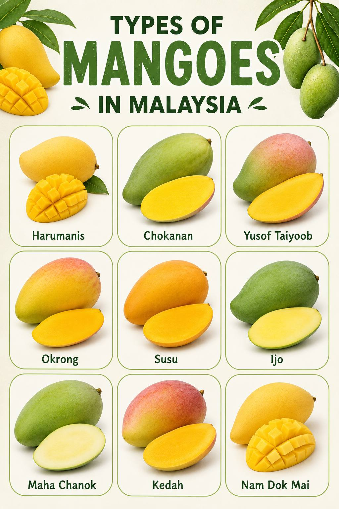

HISTORY
Mango is one of the most popular tropical fruits in Malaysia. It is believed that mango was first introduced to Southeast Asia from South Asia (India region) many centuries ago through trade routes. In Malaysia, mango has been widely cultivated for generations, especially in states like Perak, Johor, Kedah, and Melaka. Over time, local farmers developed many different mango varieties that suit Malaysia’s hot and humid climate. Today, mango is not only eaten fresh but also used in juices, pickles, and traditional desserts.

TYPES OF MANGO
- Harum Manis
- Chok Anan
- Yusof Taiyoob
- Okrong
- Susu
- Ijo
- Maha Chanok
- Kedah
- Nam Dok Mai
HEALTH BENEFITS
- Rich in Vitamin C – strengthens the immune system
- Contains Vitamin A – supports healthy vision
- High in Fiber – promotes good digestion
- Rich in Antioxidants – helps protect body cells

HOW TO PLANT MANGO
Prepare Seed
Choose a healthy mango seed from ripe fruit.
Plant the Seed
Plant the seed in fertile soil with good drainage.
Water Regularly
Keep soil moist but not flooded.
Apply Fertilizer
Apply fertilizer to encourage healthy growth.
Remove Unwanted Shoots
Remove unwanted shoots to improve fruit production.
FUN FACTS
- Mango season is usually March to June.
- Mango trees can live over 30 years.
- Malaysians often eat mango with “asam boi” or chili salt for extra flavour.